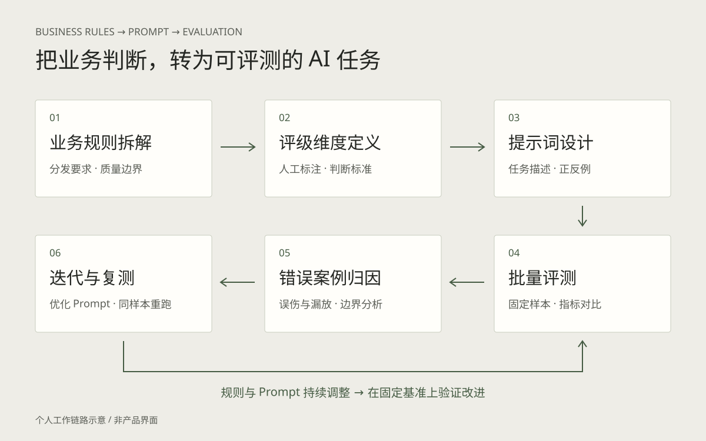

从业务规则到模型判断

壁纸素材评级依赖人工判断，需要统一质量标准，并关注误伤与低质内容漏放。
业务规则与维度拆解
围绕壁纸质量与分发要求拆解评级维度，明确判断边界，并以人工标注形成评测参照。
提示词设计与优化
按维度维护任务描述与正反例，结合误伤、漏放等错误案例调整判断边界与提示词。
评测设计
以人工标注为参照，输出 Accuracy、Precision、Recall、F1 与混淆矩阵；单独跟踪高风险误伤。
迭代方法
固定基准样本和 Prompt 版本，按错误案例分析边界，小步修改后在同样本上复测。
工程支持
多进程批跑、限流、缓存与断点续跑，支持模型、投票与 Prompt 对照。
交付产物
生成可复核的 HTML 报告和 AI / 人工对比表，支撑运营与审核判断。
减少误判，让自动化判断更可靠
在已有准确率基础上，结合错误案例分析与 Prompt 迭代，进一步减少模型判断错误。
错误率（越低越好） · 灰色：迭代前 / 橄榄色：迭代后
低质卡通动漫错误率相对下降约 55%
不予分发错误率相对下降约 80%
定向分发错误率相对下降约 83%
| 评级维度 | 准确率变化 | 错误率变化 | 错误率相对下降 |
|---|---|---|---|
| 低质卡通动漫 | 89% → 95% | 11% → 5% | 约 55% |
| 不予分发 | 95% → 99% | 5% → 1% | 约 80% |
| 定向分发 | 97% → 99.5% | 3% → 0.5% | 约 83% |
错误率按 1 − 准确率计算；相对降幅按（迭代前错误率 − 迭代后错误率）÷ 迭代前错误率计算。它表示评测中的判断错误，不等同于业务误伤率。前后比较以一致样本与统计口径为前提。
另据经历记录，全局误伤降至 0.5%。不同维度使用各自评测口径，不合并为单一整体准确率。公开资料未列出样本量、统计周期与完整分母，因此以上仅作为项目记录结果，不推断线上全量效果。